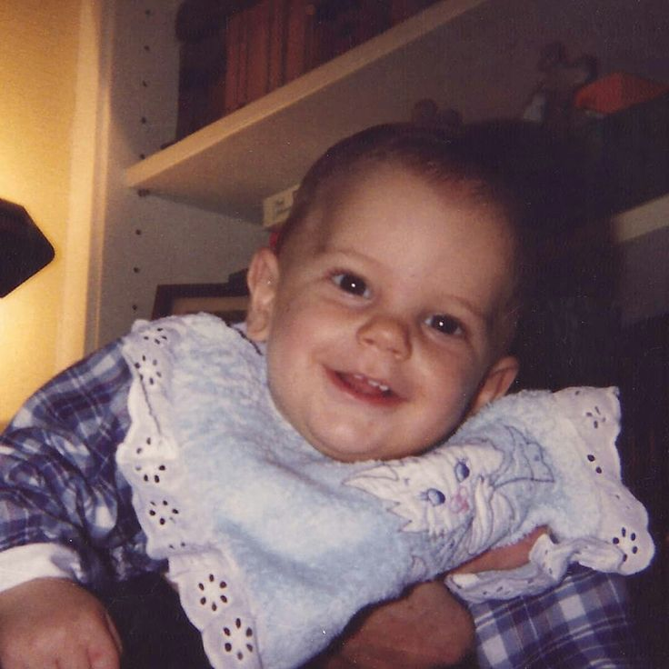

Imagen
1991: Nacimiento
Nace el 3 de mayo de 1991 en Londres, en la clÃnica «Portland», en el seno de una familia italiana que por motivos laborales residÃa en Inglaterra. El 18 de mayo de ese mismo año, recibe el Sacramento del Bautismo en la iglesia «Our Lady of Dolours», acompañado por sus abuelos paternos y maternos, su tÃa Adriana y su bisabuela Adriana, que quisieron estar presentes en aquel momento tan especial. Pocos meses después, el 8 de septiembre de 1991, Carlo se traslada con sus padres a Milán, ciudad en la que crecerá y desarrollará su vida. Desde pequeño destacó por su carácter alegre y sociable, además de mostrar una especial sensibilidad por la fe y una gran cercanÃa con las personas que lo rodeaban.